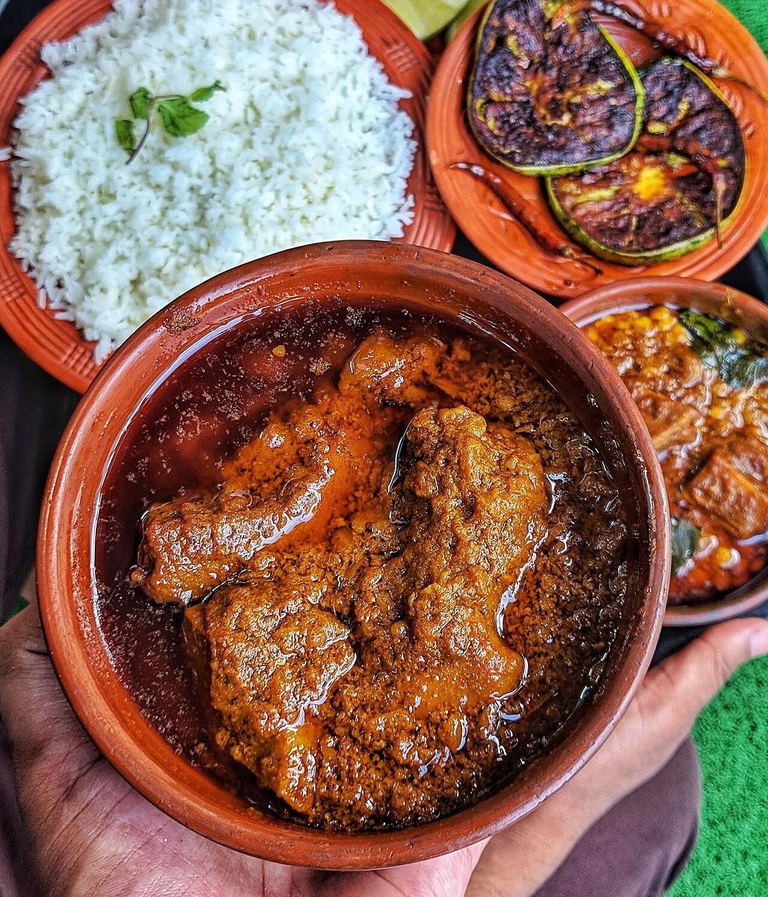

Home
Gorur-Mangsho

Description
To make traditional Bengali beef curry (Gorur Mangsho), begin by marinating tender beef cubes with sliced onions, ginger-garlic paste, yogurt, and a blend of ground spices including turmeric, cumin, coriander, and chili powder. Heat mustard oil in a heavy-bottomed pot, temper it with whole aromatic spices like cardamom, cinnamon, bay leaves, and cloves, then saute additional onions until deep golden brown before adding the marinated meat to sear thoroughly.
Slow-cook the beef on low heat until its natural juices release and reduce, allowing the spices to infuse deeply into the meat during the bhuna stage. Once the oil separates from the gravy, toss in halved potatoes and pour in hot water, simmering covered until both the beef and potatoes become melt-in-your-mouth tender, then finish with a sprinkle of toasted bhaja garom masala before serving hot with steamed rice.
- Beef: 1 kg, cut into curry pieces
- Mustard oil: 4 tablespoons
- Onions: 2 cups, sliced
- Potatoes: 2 large, halved
- Ginger paste: 1 tablespoon
- Garlic paste: 1 tablespoon
- Bay leaves: 2 pieces
- Cardamom and Cinnamon: 3 pieces each
- Turmeric powder: 1 teaspoon
- Red chili powder: 1 teaspoon
- Cumin powder: 1 teaspoon
- Coriander powder: 1 teaspoon
- Garam masala powder: 1 teaspoon
- Salt: To taste
- Marinate the beef with ginger paste, garlic paste, turmeric, chili powder, cumin, coriander, and salt for at least 30 minutes.
- Heat mustard oil in a heavy pot and fry the halved potatoes until lightly golden, then set them aside.
- Add bay leaves, cardamom, and cinnamon to the same oil, then saute the sliced onions until dark golden brown.
- Add the marinated beef to the pot and cook on medium-high heat for 10–15 minutes until the juices release and start to reduce.
- Cover and simmer on low heat, stirring occasionally, until the meat is tender and the oil separates from the spices.
- Pour in warm water along with the fried potatoes, cover, and cook until both the beef and potatoes are fully tender.
- Sprinkle garam masala powder over the curry, stir well, and remove from heat before serving hot.